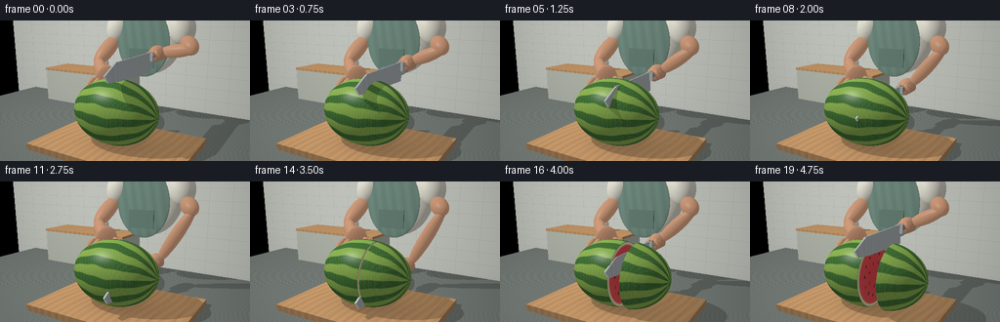
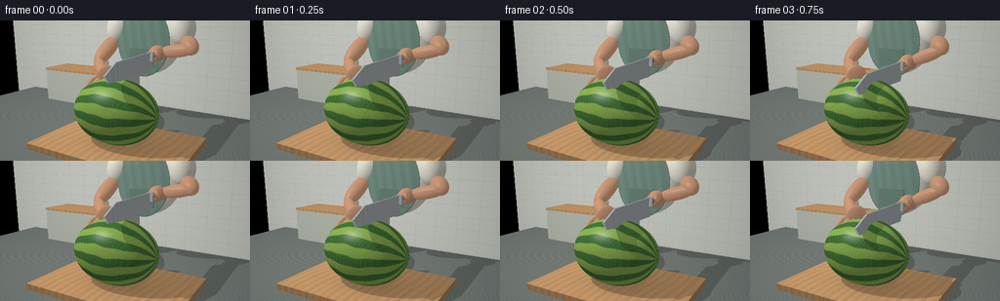

CODING AGENTS AS PIXEL WORLD MODELS
traex/GPT-6.1-Sol · motion_rationality_0008
点击播放 · 原生 RGB 像素
逐轮保存的候选
回放视频、检查图与代码变化。
每份候选均可单独播放。实际图片检查记录在下方工具轨迹中。
候选 01播放与检查图
点击播放 · 原生 RGB 像素

展开代码变化
--- 上一保存版本
+++ 本次保存版本
@@ -0,0 +1,270 @@
+from pathlib import Path
+import json
+import numpy as np
+from PIL import Image, ImageFilter
+import artifact_io
+
+ROOT=Path(__file__).resolve().parent
+SPEC=json.loads((ROOT/'task_spec.json').read_text())
+W,H=SPEC['width']*2,SPEC['height']*2
+rng=np.random.default_rng(12)
+
+def norm(a): return a/np.maximum(np.linalg.norm(a,axis=-1,keepdims=True),1e-10)
+
+def basis_between(a,b):
+ v=norm(np.array(b)-a)
+ u=norm(np.cross(v,[0,0,1] if abs(v[2])<.9 else [1,0,0]))
+ return np.stack([u,v,np.cross(u,v)],axis=1)
+
+class Shape:
+ def __init__(self,kind,c,size,mat,rot=None,clip=None):
+ self.kind=kind; self.c=np.array(c,float);self.size=np.array(size,float);self.mat=mat
+ self.rot=np.eye(3) if rot is None else rot;self.clip=clip
+ def hit(self,O,D):
+ o=(O-self.c)@self.rot; d=D@self.rot
+ if self.kind=='ell':
+ os=o/self.size;ds=d/self.size
+ a=np.sum(ds*ds,axis=-1);b=np.sum(os*ds,axis=-1);c=np.sum(os*os,axis=-1)-1
+ disc=b*b-a*c;s=np.sqrt(np.maximum(disc,0));ta=(-b-s)/a;tb=(-b+s)/a
+ if self.clip is None:
+ t=np.where(ta>1e-4,ta,tb);t=np.where((disc>=0)&(t>1e-4),t,np.inf)
+ p=o+d*np.where(np.isfinite(t),t,0)[...,None];n=norm(p/(self.size*self.size))@self.rot.T
+ return t,n,np.zeros(t.shape,dtype=np.int8)
+ # A sphere clipped at x=clip[0], with an actual flat fleshy end.
+ cut,side=self.clip
+ pa=o+d*ta[...,None];pb=o+d*tb[...,None]
+ gooda=(disc>=0)&(ta>1e-4)&((pa[...,0]-cut)*side>=-1e-7)
+ goodb=(disc>=0)&(tb>1e-4)&((pb[...,0]-cut)*side>=-1e-7)
+ t=np.minimum(np.where(gooda,ta,np.inf),np.where(goodb,tb,np.inf))
+ tp=(cut-o[...,0])/np.where(abs(d[...,0])>1e-10,d[...,0],1e-10)
+ pp=o+d*tp[...,None]
+ goodp=(tp>1e-4)&(np.sum((pp/self.size)**2,axis=-1)<=1)&(abs(d[...,0])>1e-10)
+ tp=np.where(goodp,tp,np.inf);face=tp<t;t=np.minimum(t,tp)
+ p=o+d*np.where(np.isfinite(t),t,0)[...,None];n=norm(p/(self.size*self.size))
+ n[face]=[-side,0,0]
+ return t,n@self.rot.T,face.astype(np.int8)
+ if self.kind=='box':
+ dd=np.where(abs(d)>1e-9,d,1e-9)
+ ta=(-self.size-o)/dd;tb=(self.size-o)/dd
+ lo=np.minimum(ta,tb);hi=np.maximum(ta,tb)
+ near=np.max(lo,axis=-1);far=np.min(hi,axis=-1)
+ t=np.where(near>1e-4,near,far);t=np.where((far>=near)&(t>1e-4),t,np.inf)
+ p=o+d*np.where(np.isfinite(t),t,0)[...,None]
+ idx=np.argmax(abs(p/self.size),axis=-1);n=np.zeros_like(p)
+ for k in range(3):n[...,k]=np.where(idx==k,np.sign(p[...,k]),0)
+ return t,n@self.rot.T,np.zeros(t.shape,dtype=np.int8)
+
+class Blade:
+ def __init__(self,x,base,shift):
+ self.c=np.array([x,base,shift]);self.mat='steel'; self.kind='blade'
+ # chef's knife, sharp edge with curved belly and a low point
+ poly=np.array([[-.95,.45],[.55,.40],[.94,.20],[.83,.055],[.42,.015],[-.95,0.]]) # z,y
+ verts=[]
+ for sx in [-.018,.018]:
+ verts.extend([[x+sx,base+y,z+shift] for z,y in poly])
+ self.verts=np.array(verts)
+ self.tri=[]
+ for i in range(1,5):self.tri.extend([(0,i+1,i),(6,6+i,6+i+1)])
+ for i in range(6):j=(i+1)%6;self.tri.extend([(i,j,6+j),(i,6+j,6+i)])
+ def hit(self,O,D):
+ out=np.full(D.shape[:-1],np.inf);N=np.zeros_like(D)
+ for ids in self.tri:
+ a,b,c=self.verts[list(ids)];e1=b-a;e2=c-a
+ p=np.cross(D,e2);det=p@e1;inv=1/np.where(abs(det)>1e-8,det,1e-8)
+ tv=O-a;u=np.sum(tv*p,axis=-1)*inv;q=np.cross(tv,e1);v=np.sum(D*q,axis=-1)*inv;t=np.sum(q*e2,axis=-1)*inv
+ good=(abs(det)>1e-8)&(u>=0)&(v>=0)&(u+v<=1)&(t>1e-4)&(t<out)
+ out[good]=t[good];n=norm(np.cross(e1,e2));N[good]=n
+ return out,N,np.zeros(out.shape,dtype=np.int8)
+
+skin=np.array([.66,.365,.225]); mats={
+ 'skin':skin,'nail':np.array([.78,.49,.36]),'shirt':np.array([.83,.81,.71]),
+ 'apron':np.array([.205,.32,.27]),'strap':np.array([.17,.27,.225]),
+ 'board':np.array([.58,.34,.16]),'counter':np.array([.19,.215,.20]),
+ 'wall':np.array([.64,.66,.61]),'cabinet':np.array([.54,.57,.50]),
+ 'black':np.array([.045,.045,.037]),'steel':np.array([.62,.67,.69]),
+ 'rivet':np.array([.65,.68,.66]),'ceramic':np.array([.85,.82,.72])}
+seedpos=[]
+for j in range(13):
+ a=2*np.pi*j/13+.1
+ seedpos.append((.44*np.sin(a),.40*np.cos(a),.13*np.sin(a)))
+for j in range(7):
+ a=2*np.pi*j/7+.37;seedpos.append((.25*np.sin(a),.235*np.cos(a),.10*np.sin(a)))
+
+def scene(frame):
+ objs=[]
+ def ell(c,s,mat,rot=None,clip=None):objs.append(Shape('ell',c,s,mat,rot,clip))
+ def box(c,s,mat,rot=None):objs.append(Shape('box',c,s,mat,rot))
+ def limb(a,b,r1,r2,mat='skin'):
+ a=np.array(a);b=np.array(b);ell((a+b)/2,[r1,np.linalg.norm(a-b)/2+r1*.53,r2],mat,basis_between(a,b))
+ # tiled backdrop, cabinetry, countertop and thick wooden chopping board
+ box([0,1.55,-3.3],[7,2.6,.08],'wall')
+ box([-2.7,.48,-2.65],[1.5,.53,.54],'cabinet')
+ box([-2.7,1.025,-2.65],[1.52,.035,.56],'board')
+ box([0,-.18,0],[6,.15,5],'counter')
+ box([0,.025,.10],[1.62,.08,1.10],'board')
+ # Person framed at the torso, with an apron over a light rolled-sleeve shirt.
+ ell([-.22,2.45,-1.85],[.95,1.18,.39],'shirt')
+ ell([-.22,2.13,-1.445],[.72,.88,.052],'apron')
+ for x in [-.73,.30]:
+ limb([x,2.70,-1.46],[x,3.19,-1.55],.048,.045,'strap')
+ box([-.22,1.73,-1.383],[.34,.23,.019],'strap')
+ # Sleeves and bare forearms.
+ ell([-.99,2.54,-1.7],[.35,.52,.35],'shirt',basis_between([-.82,2.94,-1.8],[-1.1,2.14,-1.55]))
+ ell([.64,2.54,-1.75],[.35,.51,.35],'shirt',basis_between([.48,2.93,-1.8],[.87,2.17,-1.45]))
+ limb([-1.08,2.19,-1.6],[-1.24,1.63,-.95],.205,.19)
+ limb([-1.24,1.63,-.95],[-.62,1.43,-.28],.165,.145)
+ ell([-.44,1.405,-.13],[.30,.095,.25],'skin',basis_between([-.6,1.4,-.25],[-.3,1.4,.05]))
+ # The left fingers rest on the far side of the cut, safely out of the blade path.
+ for k in range(4):
+ x=-.67+k*.145;z=.02+(k%2)*.018
+ limb([x,1.405,z],[x+.015,1.29,.27],.064,.060)
+ limb([x+.015,1.29,.27],[x+.035,1.165,.36],.058,.052)
+ ell([x+.035,1.19,.375],[.037,.054,.009],'nail')
+ limb([-.27,1.42,-.20],[-.12,1.31,-.10],.079,.068)
+ # Cut progression: controlled downward pressure, followed by blade retraction.
+ if frame<=2: base=1.49-.055*frame
+ elif frame<=13:
+ p=(frame-2)/11;base=1.38-1.265*p
+ else:
+ p=min((frame-13)/5,1);base=.115+1.12*(p*p*(3-2*p))
+ shift=.055*np.sin(frame*1.25) if frame<=13 else 0
+ gap=0 if frame<=13 else .40*((min((frame-13)/5,1))**2*(3-2*min((frame-13)/5,1)))
+ # Watermelon split into matching solid pieces. Its cut face is hidden before separation.
+ ell([0,.80,.20],[.95,.695,.68],'melon',clip=(.23,-1))
+ ell([gap,.80,.20],[.95,.695,.68],'melon',clip=(.23,1))
+ objs.append(Blade(.23,base,shift))
+ box([.23,base+.345,-1.215+shift],[.072,.085,.30],'black')
+ box([.23,base+.345,-.937+shift],[.085,.098,.045],'steel')
+ for z in [-1.12,-1.36]:ell([.305,base+.345,z+shift],[.006,.024,.024],'rivet')
+ hand=np.array([.24,base+.385,-1.22+shift])
+ elbow=np.array([1.13,2.02,-1.27])
+ limb([.87,2.17,-1.5],elbow,.20,.18)
+ limb(elbow,hand+[.06,.02,-.18],.155,.137)
+ ell(hand+[0,.048,-.09],[.165,.145,.25],'skin')
+ for j in range(4):
+ z=-1.45+j*.128+shift
+ limb([.325,base+.465,z],[.375,base+.30,z],.062,.066)
+ limb([.375,base+.30,z],[.245,base+.25,z],.060,.059)
+ ell([.34,base+.265,z+.012],[.03,.012,.041],'nail')
+ limb([.13,base+.49,-1.37+shift],[.115,base+.32,-1.10+shift],.077,.07)
+ # Decorative ceramic jar remains static in the background.
+ ell([-2.18,1.31,-2.52],[.20,.28,.20],'ceramic')
+ box([-2.18,1.58,-2.52],[.16,.026,.16],'board')
+ return objs
+
+cam=np.array([3.2,2.70,5.3]);target=np.array([-.05,1.14,-.28])
+fwd=norm(target-cam);right=norm(np.cross(fwd,[0,1,0]));up=np.cross(right,fwd)
+y,x=np.mgrid[0:H,0:W];sx=(x+.5-W/2)/(W/2);sy=-(y+.5-H/2)/(W/2)
+D=norm(fwd+sx[...,None]*.415*right+sy[...,None]*.415*up)
+LIGHT=np.array([-3.4,6.0,3.0])
+
+def colors(obj,P,N,face):
+ mat=obj.mat
+ if mat=='melon':
+ local=(P-obj.c)@obj.rot
+ xx=local[:,0]/.95;yy=local[:,1]/.695;zz=local[:,2]/.68
+ longitude=np.arctan2(zz,yy)
+ wiggle=.27*np.sin(6*xx+2.4*longitude)+.14*np.sin(14*xx-3*longitude)
+ stripe=np.sin(11*longitude+wiggle)
+ pat=np.clip((stripe+.24)*2.5,0,1)
+ mott=.024*np.sin(P[:,0]*93+np.sin(P[:,1]*67))*np.sin(P[:,2]*83)
+ C=np.array([.065,.19,.045])+(np.array([.28,.46,.095])-np.array([.065,.19,.045]))*pat[:,None]+mott[:,None]
+ if np.any(face):
+ ids=np.where(face)[0];l=local[ids]
+ rad=np.sqrt((l[:,1]/.695)**2+(l[:,2]/.68)**2)/np.sqrt(1-(.23/.95)**2)
+ texture=.026*np.sin(l[:,1]*121+np.sin(l[:,2]*95))+.018*np.sin(l[:,2]*177+l[:,1]*183)
+ flesh=np.tile([.83,.075,.095],(len(ids),1));flesh+=texture[:,None]*np.array([1,.4,.4])
+ flesh+=np.clip(rad-.25,0,1)[:,None]*np.array([.065,.04,.022])
+ white=np.clip((rad-.88)/.068,0,1)
+ flesh=flesh*(1-white[:,None])+np.array([.86,.885,.57])*white[:,None]
+ rind=np.clip((rad-.971)/.023,0,1)
+ flesh=flesh*(1-rind[:,None])+np.array([.17,.34,.065])*rind[:,None]
+ # Embedded glossy dark seeds, aligned in the natural radial pattern.
+ for zy,zz0,ang in seedpos:
+ dy=l[:,1]-zy;dz=l[:,2]-zz0
+ u=dy*np.cos(ang)+dz*np.sin(ang);v=-dy*np.sin(ang)+dz*np.cos(ang)
+ r=(u/.030)**2+(v/.017)**2
+ mask=r<1
+ flesh[mask]=np.array([.047,.020,.012])+np.clip(1-r[mask],0,1)[:,None]*np.array([.05,.018,.009])
+ shine=((u+.012)/.009)**2+((v+.005)/.005)**2<1
+ flesh[shine&mask]=[.24,.14,.095]
+ C[ids]=flesh
+ return np.clip(C,0,1)
+ C=np.tile(mats[mat],(len(P),1))
+ if mat=='board':
+ # Longitudinal fine wood grain, board seams, and gently rounded color shading.
+ g=np.sin(P[:,0]*35+2*np.sin(P[:,2]*2.2)+.5*np.sin(P[:,0]*3))
+ fine=np.sin(P[:,0]*190+5*np.sin(P[:,2]*4))
+ C*= (1+.07*g+.025*fine)[:,None]
+ seams=np.minimum(np.mod(P[:,0]+1.62,.43),.43-np.mod(P[:,0]+1.62,.43))
+ C*=np.where(seams<.007,.79,1)[:,None]
+ elif mat=='counter':
+ tex=.018*np.sin(P[:,0]*90)*np.sin(P[:,2]*99)+.01*np.sin(P[:,0]*207+P[:,2]*225)
+ C+=tex[:,None]
+ elif mat in ('apron','strap','shirt'):
+ tex=.012*np.sin(P[:,0]*185)*np.sin(P[:,1]*195)
+ C+=tex[:,None]
+ if mat=='apron':C*= (1+.065*np.sin(P[:,0]*24+P[:,1]*4))[:,None]
+ elif mat=='skin':
+ C+=.012*np.sin(P[:,0]*127+P[:,1]*98)*np.sin(P[:,2]*89)[:,None] if False else 0
+ elif mat=='wall':
+ gx=np.mod(P[:,0]+.3,.63);gy=np.mod(P[:,1],.35)
+ grout=(gx<.013)|(gy<.012);C[grout]*=.88
+ elif mat=='steel':
+ C+=.03*np.sin(P[:,2]*400)[:,None]
+ return np.clip(C,0,1)
+
+def render(frame):
+ objs=scene(frame);nearest=np.full((H,W),np.inf);ids=np.full((H,W),-1,int);N=np.zeros((H,W,3));faces=np.zeros((H,W),int)
+ for i,obj in enumerate(objs):
+ t,n,f=obj.hit(cam,D);valid=t<nearest
+ nearest[valid]=t[valid];ids[valid]=i;N[valid]=n[valid];faces[valid]=f[valid]
+ P=cam+D*np.where(np.isfinite(nearest),nearest,0)[...,None]
+ rgb=np.zeros((H,W,3))
+ for i,obj in enumerate(objs):
+ mask=ids==i
+ if not mask.any():continue
+ p=P[mask];n=N[mask];v=-D[mask];f=faces[mask]
+ n=np.where((np.sum(n*v,axis=-1)<0)[:,None],-n,n)
+ l=norm(LIGHT-p);ndl=np.maximum(np.sum(n*l,axis=-1),0)
+ # One soft shadow ray is blended with the ambient skylight, giving contact depth.
+ visibility=np.ones(len(p));rayO=p+n*.003
+ if obj.mat not in ('wall','cabinet','shirt','apron','strap'):
+ for j,other in enumerate(objs):
+ if i==j or other.mat in ('wall','cabinet','counter','strap','rivet','nail'):continue
+ tt,_,_=other.hit(rayO,l)
+ shadow=(tt<np.linalg.norm(LIGHT-p,axis=-1))
+ visibility[shadow]=.28
+ albedo=colors(obj,p,n,f)
+ ambient=.32+.15*np.maximum(n[:,1],0)
+ if obj.mat=='skin':
+ diffuse=.58*(.23+.77*ndl)*visibility
+ else:diffuse=.68*ndl*visibility
+ c=albedo*(ambient+diffuse)[:,None]
+ halfway=norm(l+v);specangle=np.maximum(np.sum(n*halfway,axis=-1),0)
+ if obj.mat=='steel':
+ # Brushed steel reflects a broad bright window and a narrower polished edge.
+ refl=2*np.sum(n*v,axis=-1)[:,None]*n-v
+ env=.26+.34*np.maximum(refl[:,1],0)+.22*np.exp(-((refl[:,0]+.45)/.3)**2)
+ c=albedo*env[:,None]+.60*(specangle**35*visibility)[:,None]
+ else:
+ power=65 if obj.mat in ('melon','skin','nail') else 45
+ amount=.19 if obj.mat=='melon' else .09 if obj.mat in ('skin','nail') else .045
+ c+=amount*(specangle**power*visibility)[:,None]
+ # Mild diffuse contact shading at the cutting-board level.
+ if obj.mat=='board':
+ dist=((p[:,0]-.09)/1.05)**2+((p[:,2]-.2)/.79)**2
+ c*= (1-.24*np.exp(-dist*2))[:,None]
+ rgb[mask]=c
+ rgb=np.clip(rgb,0,1)
+ rgb=rgb**(1/2.05)
+ # Subtle photographic vignette and deterministic, subpixel texture.
+ vig=1-.085*(sx*sx+sy*sy);rgb*=vig[...,None]
+ im=Image.fromarray(np.uint8(np.clip(rgb*255,0,255))).resize((SPEC['width'],SPEC['height']),Image.Resampling.LANCZOS)
+ return np.array(im)
+
+if __name__=='__main__':
+ frames=[]
+ for f in range(SPEC['frames']):
+ frames.append(render(f));print('Rendered',f,flush=True)
+ artifact_io.save(np.stack(frames),ROOT)
候选 02播放与检查图
点击播放 · 原生 RGB 像素

展开代码变化
--- 上一保存版本
+++ 本次保存版本
@@ -97,7 +97,7 @@
def limb(a,b,r1,r2,mat='skin'):
a=np.array(a);b=np.array(b);ell((a+b)/2,[r1,np.linalg.norm(a-b)/2+r1*.53,r2],mat,basis_between(a,b))
# tiled backdrop, cabinetry, countertop and thick wooden chopping board
- box([0,1.55,-3.3],[7,2.6,.08],'wall')
+ box([0,2.6,-3.3],[16,4.6,.08],'wall')
box([-2.7,.48,-2.65],[1.5,.53,.54],'cabinet')
box([-2.7,1.025,-2.65],[1.52,.035,.56],'board')
box([0,-.18,0],[6,.15,5],'counter')
@@ -128,10 +128,15 @@
else:
p=min((frame-13)/5,1);base=.115+1.12*(p*p*(3-2*p))
shift=.055*np.sin(frame*1.25) if frame<=13 else 0
- gap=0 if frame<=13 else .40*((min((frame-13)/5,1))**2*(3-2*min((frame-13)/5,1)))
+ settle=0 if frame<=13 else ((min((frame-13)/5,1))**2*(3-2*min((frame-13)/5,1)))
+ gap=.58*settle
# Watermelon split into matching solid pieces. Its cut face is hidden before separation.
ell([0,.80,.20],[.95,.695,.68],'melon',clip=(.23,-1))
- ell([gap,.80,.20],[.95,.695,.68],'melon',clip=(.23,1))
+ angle=.95*settle
+ co,si=np.cos(angle),np.sin(angle)
+ turn=np.array([[co,0,si],[0,1,0],[-si,0,co]])
+ cap_center=np.array([.23,.80,.20])+turn@np.array([-.23,0,0])+[gap,0,.24*settle]
+ ell(cap_center,[.95,.695,.68],'melon',rot=turn,clip=(.23,1))
objs.append(Blade(.23,base,shift))
box([.23,base+.345,-1.215+shift],[.072,.085,.30],'black')
box([.23,base+.345,-.937+shift],[.085,.098,.045],'steel')
@@ -206,7 +211,7 @@
C+=tex[:,None]
if mat=='apron':C*= (1+.065*np.sin(P[:,0]*24+P[:,1]*4))[:,None]
elif mat=='skin':
- C+=.012*np.sin(P[:,0]*127+P[:,1]*98)*np.sin(P[:,2]*89)[:,None] if False else 0
+ C+=(.007*np.sin(P[:,0]*127+P[:,1]*98)*np.sin(P[:,2]*89))[:,None]
elif mat=='wall':
gx=np.mod(P[:,0]+.3,.63);gy=np.mod(P[:,1],.35)
grout=(gx<.013)|(gy<.012);C[grout]*=.88
候选 03播放与检查图
可观测工具轨迹
实际执行的命令与返回图片。
命令 1exit 0
/bin/bash -lc 'ls -la && cat prompt.txt && cat GENERATION_RULES.md && cat task_spec.json'
命令 2exit 0
/bin/bash -lc "cat artifact_io.py && python - <<'PY' import importlib.util for m in ['numpy','PIL','scipy']: print(m, bool(importlib.util.find_spec(m))) PY"
命令 3exit 0
/bin/bash -lc "cat > generate.py <<'PY'
from pathlib import Path
import json
import numpy as np
from PIL import Image, ImageFilter
import artifact_io
ROOT=Path(__file__).resolve().parent
SPEC=json.loads((ROOT/'task_spec.json').read_text())
W,H=SPEC['width']*2,SPEC['height']*2
rng=np.random.default_rng(12)
def norm(a): return a/np.maximum(np.linalg.norm(a,axis=-1,keepdims=True),1e-10)
def basis_between(a,b):
v=norm(np.array(b)-a)
u=norm(np.cross(v,[0,0,1] if abs(v[2])<.9 else [1,0,0]))
return np.stack([u,v,np.cross(u,v)],axis=1)
class Shape:
def __init__(self,kind,c,size,mat,rot=None,clip=None):
self.kind=kind; self.c=np.array(c,float);self.size=np.array(size,float);self.mat=mat
self.rot=np.eye(3) if rot is None else rot;self.clip=clip
def hit(self,O,D):
o=(O-self.c)@self.rot; d=D@self.rot
if self.kind=='ell':
os=o/self.size;ds=d/self.size
a=np.sum(ds*ds,axis=-1);b=np.sum(os*ds,axis=-1);c=np.sum(os*os,axis=-1)-1
disc=b*b-a*c;s=np.sqrt(np.maximum(disc,0));ta=(-b-s)/a;tb=(-b+s)/a
if self.clip is None:
t=np.where(ta>1e-4,ta,tb);t=np.where((disc>=0)&(t>1e-4),t,np.inf)
p=o+d*np.where(np.isfinite(t),t,0)[...,None];n=norm(p/(self.size*self.size))@self.rot.T
return t,n,np.zeros(t.shape,dtype=np.int8)
# A sphere clipped at x=clip[0], with an actual flat fleshy end.
cut,side=self.clip
pa=o+d*ta[...,None];pb=o+d*tb[...,None]
gooda=(disc>=0)&(ta>1e-4)&((pa[...,0]-cut)*side>=-1e-7)
goodb=(disc>=0)&(tb>1e-4)&((pb[...,0]-cut)*side>=-1e-7)
t=np.minimum(np.where(gooda,ta,np.inf),np.where(goodb,tb,np.inf))
tp=(cut-o[...,0])/np.where(abs(d[...,0])>1e-10,d[...,0],1e-10)
pp=o+d*tp[...,None]
goodp=(tp>1e-4)&(np.sum((pp/self.size)**2,axis=-1)<=1)&(abs(d[...,0])>1e-10)
tp=np.where(goodp,tp,np.inf);face=tp<t;t=np.minimum(t,tp)
p=o+d*np.where(np.isfinite(t),t,0)[...,None];n=norm(p/(self.size*self.size))
n[face]=[-side,0,0]
return t,n@self.rot.T,face.astype(np.int8)
if self.kind=='box':
dd=np.where(abs(d)>1e-9,d,1e-9)
ta=(-self.size-o)/dd;tb=(self.size-o)/dd
lo=np.minimum(ta,tb);hi=np.maximum(ta,tb)
near=np.max(lo,axis=-1);far=np.min(hi,axis=-1)
t=np.where(near>1e-4,near,far);t=np.where((far>=near)&(t>1e-4),t,np.inf)
p=o+d*np.where(np.isfinite(t),t,0)[...,None]
idx=np.argmax(abs(p/self.size),axis=-1);n=np.zeros_like(p)
for k in range(3):n[...,k]=np.where(idx==k,np.sign(p[...,k]),0)
return t,n@self.rot.T,np.zeros(t.shape,dtype=np.int8)
class Blade:
def __init__(self,x,base,shift):
self.c=np.array([x,base,shift]);self.mat='steel'; self.kind='blade'
# chef's knife, sharp edge with curved belly and a low point
poly=np.array([[-.95,.45],[.55,.40],[.94,.20],[.83,.055],[.42,.015],[-.95,0.]]) # z,y
verts=[]
for sx in [-.018,.018]:
verts.extend([[x+sx,base+y,z+shift] for z,y in poly])
self.verts=np.array(verts)
self.tri=[]
for i in range(1,5):self.tri.extend([(0,i+1,i),(6,6+i,6+i+1)])
for i in range(6):j=(i+1)%6;self.tri.extend([(i,j,6+j),(i,6+j,6+i)])
def hit(self,O,D):
out=np.full(D.shape[:-1],np.inf);N=np.zeros_like(D)
for ids in self.tri:
a,b,c=self.verts[list(ids)];e1=b-a;e2=c-a
p=np.cross(D,e2);det=p@e1;inv=1/np.where(abs(det)>1e-8,det,1e-8)
tv=O-a;u=np.sum(tv*p,axis=-1)*inv;q=np.cross(tv,e1);v=np.sum(D*q,axis=-1)*inv;t=np.sum(q*e2,axis=-1)*inv
good=(abs(det)>1e-8)&(u>=0)&(v>=0)&(u+v<=1)&(t>1e-4)&(t<out)
out[good]=t[good];n=norm(np.cross(e1,e2));N[good]=n
return out,N,np.zeros(out.shape,dtype=np.int8)
skin=np.array([.66,.365,.225]); mats={
'skin':skin,'nail':np.array([.78,.49,.36]),'shirt':np.array([.83,.81,.71]),
'apron':np.array([.205,.32,.27]),'strap':np.array([.17,.27,.225]),
'board':np.array([.58,.34,.16]),'counter':np.array([.19,.215,.20]),
'wall':np.array([.64,.66,.61]),'cabinet':np.array([.54,.57,.50]),
'black':np.array([.045,.045,.037]),'steel':np.array([.62,.67,.69]),
'rivet':np.array([.65,.68,.66]),'ceramic':np.array([.85,.82,.72])}
seedpos=[]
for j in range(13):
a=2*np.pi*j/13+.1
seedpos.append((.44*np.sin(a),.40*np.cos(a),.13*np.sin(a)))
for j in range(7):
a=2*np.pi*j/7+.37;seedpos.append((.25*np.sin(a),.235*np.cos(a),.10*np.sin(a)))
def scene(frame):
objs=[]
def ell(c,s,mat,rot=None,clip=None):objs.append(Shape('ell',c,s,mat,rot,clip))
def box(c,s,mat,rot=None):objs.append(Shape('box',c,s,mat,rot))
def limb(a,b,r1,r2,mat='skin'):
a=np.array(a);b=np.array(b);ell((a+b)/2,[r1,np.linalg.norm(a-b)/2+r1*.53,r2],mat,basis_between(a,b))
# tiled backdrop, cabinetry, countertop and thick wooden chopping board
box([0,1.55,-3.3],[7,2.6,.08],'wall')
box([-2.7,.48,-2.65],[1.5,.53,.54],'cabinet')
box([-2.7,1.025,-2.65],[1.52,.035,.56],'board')
box([0,-.18,0],[6,.15,5],'counter')
box([0,.025,.10],[1.62,.08,1.10],'board')
# Person framed at the torso, with an apron over a light rolled-sleeve shirt.
ell([-.22,2.45,-1.85],[.95,1.18,.39],'shirt')
ell([-.22,2.13,-1.445],[.72,.88,.052],'apron')
for x in [-.73,.30]:
limb([x,2.70,-1.46],[x,3.19,-1.55],.048,.045,'strap')
box([-.22,1.73,-1.383],[.34,.23,.019],'strap')
# Sleeves and bare forearms.
ell([-.99,2.54,-1.7],[.35,.52,.35],'shirt',basis_between([-.82,2.94,-1.8],[-1.1,2.14,-1.55]))
ell([.64,2.54,-1.75],[.35,.51,.35],'shirt',basis_between([.48,2.93,-1.8],[.87,2.17,-1.45]))
limb([-1.08,2.19,-1.6],[-1.24,1.63,-.95],.205,.19)
limb([-1.24,1.63,-.95],[-.62,1.43,-.28],.165,.145)
ell([-.44,1.405,-.13],[.30,.095,.25],'skin',basis_between([-.6,1.4,-.25],[-.3,1.4,.05]))
# The left fingers rest on the far side of the cut, safely out of the blade path.
for k in range(4):
x=-.67+k*.145;z=.02+(k%2)*.018
limb([x,1.405,z],[x+.015,1.29,.27],.064,.060)
limb([x+.015,1.29,.27],[x+.035,1.165,.36],.058,.052)
ell([x+.035,1.19,.375],[.037,.054,.009],'nail')
limb([-.27,1.42,-.20],[-.12,1.31,-.10],.079,.068)
# Cut progression: controlled downward pressure, followed by blade retraction.
if frame<=2: base=1.49-.055*frame
elif frame<=13:
p=(frame-2)/11;base=1.38-1.265*p
else:
p=min((frame-13)/5,1);base=.115+1.12*(p*p*(3-2*p))
shift=.055*np.sin(frame*1.25) if frame<=13 else 0
gap=0 if frame<=13 else .40*((min((frame-13)/5,1))**2*(3-2*min((frame-13)/5,1)))
# Watermelon split into matching solid pieces. Its cut face is hidden before separation.
ell([0,.80,.20],[.95,.695,.68],'melon',clip=(.23,-1))
ell([gap,.80,.20],[.95,.695,.68],'melon',clip=(.23,1))
objs.append(Blade(.23,base,shift))
box([.23,base+.345,-1.215+shift],[.072,.085,.30],'black')
box([.23,base+.345,-.937+shift],[.085,.098,.045],'steel')
for z in [-1.12,-1.36]:ell([.305,base+.345,z+shift],[.006,.024,.024],'rivet')
hand=np.array([.24,base+.385,-1.22+shift])
elbow=np.array([1.13,2.02,-1.27])
limb([.87,2.17,-1.5],elbow,.20,.18)
limb(elbow,hand+[.06,.02,-.18],.155,.137)
ell(hand+[0,.048,-.09],[.165,.145,.25],'skin')
for j in range(4):
z=-1.45+j*.128+shift
limb([.325,base+.465,z],[.375,base+.30,z],.062,.066)
limb([.375,base+.30,z],[.245,base+.25,z],.060,.059)
ell([.34,base+.265,z+.012],[.03,.012,.041],'nail')
limb([.13,base+.49,-1.37+shift],[.115,base+.32,-1.10+shift],.077,.07)
# Decorative ceramic jar remains static in the background.
ell([-2.18,1.31,-2.52],[.20,.28,.20],'ceramic')
box([-2.18,1.58,-2.52],[.16,.026,.16],'board')
return objs
cam=np.array([3.2,2.70,5.3]);target=np.array([-.05,1.14,-.28])
fwd=norm(target-cam);right=norm(np.cross(fwd,[0,1,0]));up=np.cross(right,fwd)
y,x=np.mgrid[0:H,0:W];sx=(x+.5-W/2)/(W/2);sy=-(y+.5-H/2)/(W/2)
D=norm(fwd+sx[...,None]*.415*right+sy[...,None]*.415*up)
LIGHT=np.array([-3.4,6.0,3.0])
def colors(obj,P,N,face):
mat=obj.mat
if mat=='melon':
local=(P-obj.c)@obj.rot
xx=local[:,0]/.95;yy=local[:,1]/.695;zz=local[:,2]/.68
longitude=np.arctan2(zz,yy)
wiggle=.27*np.sin(6*xx+2.4*longitude)+.14*np.sin(14*xx-3*longitude)
stripe=np.sin(11*longitude+wiggle)
pat=np.clip((stripe+.24)*2.5,0,1)
mott=.024*np.sin(P[:,0]*93+np.sin(P[:,1]*67))*np.sin(P[:,2]*83)
C=np.array([.065,.19,.045])+(np.array([.28,.46,.095])-np.array([.065,.19,.045]))*pat[:,None]+mott[:,None]
if np.any(face):
ids=np.where(face)[0];l=local[ids]
rad=np.sqrt((l[:,1]/.695)**2+(l[:,2]/.68)**2)/np.sqrt(1-(.23/.95)**2)
texture=.026*np.sin(l[:,1]*121+np.sin(l[:,2]*95))+.018*np.sin(l[:,2]*177+l[:,1]*183)
flesh=np.tile([.83,.075,.095],(len(ids),1));flesh+=texture[:,None]*np.array([1,.4,.4])
flesh+=np.clip(rad-.25,0,1)[:,None]*np.array([.065,.04,.022])
white=np.clip((rad-.88)/.068,0,1)
flesh=flesh*(1-white[:,None])+np.array([.86,.885,.57])*white[:,None]
rind=np.clip((rad-.971)/.023,0,1)
flesh=flesh*(1-rind[:,None])+np.array([.17,.34,.065])*rind[:,None]
# Embedded glossy dark seeds, aligned in the natural radial pattern.
for zy,zz0,ang in seedpos:
dy=l[:,1]-zy;dz=l[:,2]-zz0
u=dy*np.cos(ang)+dz*np.sin(ang);v=-dy*np.sin(ang)+dz*np.cos(ang)
r=(u/.030)**2+(v/.017)**2
mask=r<1
flesh[mask]=np.array([.047,.020,.012])+np.clip(1-r[mask],0,1)[:,None]*np.array([.05,.018,.009])
shine=((u+.012)/.009)**2+((v+.005)/.005)**2<1
flesh[shine&mask]=[.24,.14,.095]
C[ids]=flesh
return np.clip(C,0,1)
C=np.tile(mats[mat],(len(P),1))
if mat=='board':
# Longitudinal fine wood grain, board seams, and gently rounded color shading.
g=np.sin(P[:,0]*35+2*np.sin(P[:,2]*2.2)+.5*np.sin(P[:,0]*3))
fine=np.sin(P[:,0]*190+5*np.sin(P[:,2]*4))
C*= (1+.07*g+.025*fine)[:,None]
seams=np.minimum(np.mod(P[:,0]+1.62,.43),.43-np.mod(P[:,0]+1.62,.43))
C*=np.where(seams<.007,.79,1)[:,None]
elif mat=='counter':
tex=.018*np.sin(P[:,0]*90)*np.sin(P[:,2]*99)+.01*np.sin(P[:,0]*207+P[:,2]*225)
C+=tex[:,None]
elif mat in ('apron','strap','shirt'):
tex=.012*np.sin(P[:,0]*185)*np.sin(P[:,1]*195)
C+=tex[:,None]
if mat=='apron':C*= (1+.065*np.sin(P[:,0]*24+P[:,1]*4))[:,None]
elif mat=='skin':
C+=.012*np.sin(P[:,0]*127+P[:,1]*98)*np.sin(P[:,2]*89)[:,None] if False else 0
elif mat=='wall':
gx=np.mod(P[:,0]+.3,.63);gy=np.mod(P[:,1],.35)
grout=(gx<.013)|(gy<.012);C[grout]*=.88
elif mat=='steel':
C+=.03*np.sin(P[:,2]*400)[:,None]
return np.clip(C,0,1)
def render(frame):
objs=scene(frame);nearest=np.full((H,W),np.inf);ids=np.full((H,W),-1,int);N=np.zeros((H,W,3));faces=np.zeros((H,W),int)
for i,obj in enumerate(objs):
t,n,f=obj.hit(cam,D);valid=t<nearest
nearest[valid]=t[valid];ids[valid]=i;N[valid]=n[valid];faces[valid]=f[valid]
P=cam+D*np.where(np.isfinite(nearest),nearest,0)[...,None]
rgb=np.zeros((H,W,3))
for i,obj in enumerate(objs):
mask=ids==i
if not mask.any():continue
p=P[mask];n=N[mask];v=-D[mask];f=faces[mask]
n=np.where((np.sum(n*v,axis=-1)<0)[:,None],-n,n)
l=norm(LIGHT-p);ndl=np.maximum(np.sum(n*l,axis=-1),0)
# One soft shadow ray is blended with the ambient skylight, giving contact depth.
visibility=np.ones(len(p));rayO=p+n*.003
if obj.mat not in ('wall','cabinet','shirt','apron','strap'):
for j,other in enumerate(objs):
if i==j or other.mat in ('wall','cabinet','counter','strap','rivet','nail'):continue
tt,_,_=other.hit(rayO,l)
shadow=(tt<np.linalg.norm(LIGHT-p,axis=-1))
visibility[shadow]=.28
albedo=colors(obj,p,n,f)
ambient=.32+.15*np.maximum(n[:,1],0)
if obj.mat=='skin':
diffuse=.58*(.23+.77*ndl)*visibility
else:diffuse=.68*ndl*visibility
c=albedo*(ambient+diffuse)[:,None]
halfway=norm(l+v);specangle=np.maximum(np.sum(n*halfway,axis=-1),0)
if obj.mat=='steel':
# Brushed steel reflects a broad bright window and a narrower polished edge.
refl=2*np.sum(n*v,axis=-1)[:,None]*n-v
env=.26+.34*np.maximum(refl[:,1],0)+.22*np.exp(-((refl[:,0]+.45)/.3)**2)
c=albedo*env[:,None]+.60*(specangle**35*visibility)[:,None]
else:
power=65 if obj.mat in ('melon','skin','nail') else 45
amount=.19 if obj.mat=='melon' else .09 if obj.mat in ('skin','nail') else .045
c+=amount*(specangle**power*visibility)[:,None]
# Mild diffuse contact shading at the cutting-board level.
if obj.mat=='board':
dist=((p[:,0]-.09)/1.05)**2+((p[:,2]-.2)/.79)**2
c*= (1-.24*np.exp(-dist*2))[:,None]
rgb[mask]=c
rgb=np.clip(rgb,0,1)
rgb=rgb**(1/2.05)
# Subtle photographic vignette and deterministic, subpixel texture.
vig=1-.085*(sx*sx+sy*sy);rgb*=vig[...,None]
im=Image.fromarray(np.uint8(np.clip(rgb*255,0,255))).resize((SPEC['width'],SPEC['height']),Image.Resampling.LANCZOS)
return np.array(im)
if __name__=='__main__':
frames=[]
for f in range(SPEC['frames']):
frames.append(render(f));print('Rendered',f,flush=True)
artifact_io.save(np.stack(frames),ROOT)
PY
python generate.py"命令 4exit 0
/bin/bash -lc 'command -v ffmpeg || true'
命令 5exit 0
/bin/bash -lc "python - <<'PY' p='generate.py' s=open(p).read().replace(\"box([0,1.55,-3.3],[7,2.6,.08],'wall')\", \"box([0,2.6,-3.3],[16,4.6,.08],'wall')\") s=s.replace(\"gap=0 if frame<=13 else .40*((min((frame-13)/5,1))**2*(3-2*min((frame-13)/5,1)))\", \"settle=0 if frame<=13 else ((min((frame-13)/5,1))**2*(3-2*min((frame-13)/5,1)))\\n gap=.58*settle\") s=s.replace(\"ell([gap,.80,.20],[.95,.695,.68],'melon',clip=(.23,1))\", \"angle=.95*settle\\n co,si=np.cos(angle),np.sin(angle)\\n turn=np.array([[co,0,si],[0,1,0],[-si,0,co]])\\n cap_center=np.array([.23,.80,.20])+turn@np.array([-.23,0,0])+[gap,0,.24*settle]\\n ell(cap_center,[.95,.695,.68],'melon',rot=turn,clip=(.23,1))\") s=s.replace(\" elif mat=='skin':\\n C+=.012*np.sin(P[:,0]*127+P[:,1]*98)*np.sin(P[:,2]*89)[:,None] if False else 0\\n\", \" elif mat=='skin':\\n C+=(.007*np.sin(P[:,0]*127+P[:,1]*98)*np.sin(P[:,2]*89))[:,None]\\n\") open(p,'w').write(s) PY python generate.py"
命令 6exit 0
/bin/bash -lc "python - <<'PY'
import numpy as np
from pathlib import Path
from PIL import Image
p=Path('.')
a=np.load('pixels.npz')['pixels']
assert a.shape==(144,256,20)
assert len(list((p/'frames').glob('*.png')))==20
for f in (p/'frames').glob('*.png'):
im=Image.open(f); assert im.size==(256,144) and im.mode=='RGB'
for f in ['generate.py','pixels.npz','index.html','inspection.png','transition_check.png']:
assert (p/f).is_file()
print('Validated 20 RGB frames, 256Ã144, 4 fps; all required artifacts exist.')
PY"视觉工具实际返回图片 1

视觉工具实际返回图片 2

保存候选 3 份；完成命令 6 次；可验证图片返回 2 张。原始 API 响应与完整日志保留在本地。